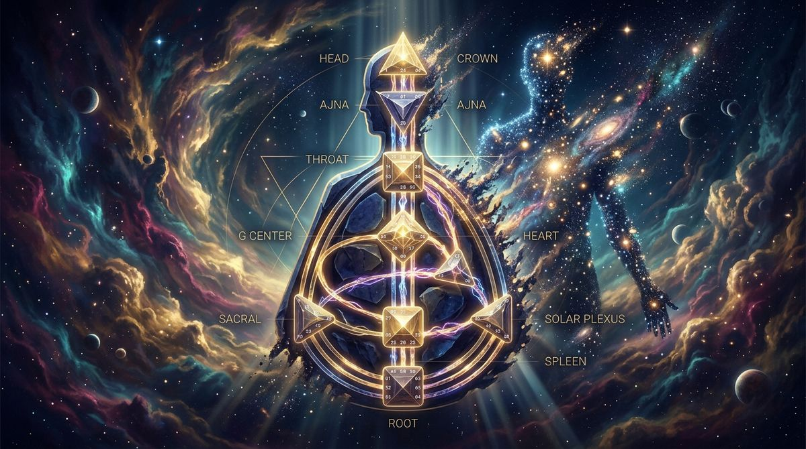

Disegno Umano: cos'è, come si calcola e perché si chiama anche Human Design
Disegno Umano: cos'è, perché si chiama anche Human Design, come si calcola la carta dai tuoi dati di nascita e dove ottenerla gratis in italiano.

Disegno Umano è il nome italiano di Human Design. Se hai cercato "disegno umano" o "human design", sei nel posto giusto: indicano lo stesso sistema. Qui trovi cos'è, come si calcola la tua carta e cosa puoi farci una volta ottenuta.
Disegno Umano e Human Design: lo stesso sistema, due nomi
Human Design nasce a metà degli anni Ottanta come sintesi tra alcuni linguaggi simbolici (I Ching, astrologia, sistema dei chakra, Kabbalah) e dati astronomici concreti. In italiano viene tradotto come Disegno Umano, anche se nella pratica molti continuano a usare il termine inglese. Capita pure di trovare "carta", "Rave Chart" o "bodygraph" per indicare il documento che ne risulta. Sono modi diversi di nominare la stessa cosa.
Quando io lavoro con il BG5, parlo dello stesso disegno applicato alla carriera e al business. Cambia il contesto di applicazione, mentre la meccanica che c'è sotto resta identica.
Cos'è davvero il Disegno Umano
Il Disegno Umano è una mappa di come funzioni. A partire dal momento esatto della tua nascita, descrive come prendi e gestisci l'energia e come arrivi alle decisioni corrette per te, prima ancora della mente. Spiega anche come ti muovi in mezzo agli altri e dove tendi a farti condizionare. Va oltre il test di personalità con quattro caselle: parte da dati di nascita precisi e restituisce una configurazione individuale.
Gli elementi che leggi nella carta sono soprattutto questi:
- il Tipo energetico (Generatore, Manifestatore, Proiettore, Riflettore, e la variante del Generatore Manifestante), che indica come usi l'energia e con quale Strategia ti conviene muoverti;
- l'Autorità Decisionale, cioè il modo in cui il tuo corpo prende le decisioni giuste, prima della mente;
- il Profilo, il ruolo ricorrente con cui attraversi la vita e le relazioni;
- i 9 Centri, definiti o aperti, con i canali e i gate che li collegano.
Nel lessico BG5 alcuni nomi cambiano: il Generatore diventa Costruttore, il Manifestatore diventa Iniziatore, il Proiettore diventa Guida, il Riflettore diventa Valutatore. È lo stesso disegno, descritto con un linguaggio più adatto al lavoro.
Come si calcola il tuo Disegno Umano
Per calcolare la carta servono tre dati: data di nascita, ora esatta e luogo di nascita. Un software usa le effemeridi astronomiche per fotografare la posizione dei pianeti in due momenti: alla nascita (lato Personalità, in nero) e circa 88 gradi solari prima (lato Design, in rosso). L'ora è il dato più delicato, perché pochi minuti possono spostare la posizione della Luna e cambiare alcuni elementi della carta.
Puoi calcolare il tuo Disegno Umano gratis, in italiano e senza registrazione: inserisci i dati e ottieni il bodygraph completo in pochi secondi. Se ti interessa il funzionamento tecnico del calcolo, lo trovi spiegato passo passo nella guida al calcolo della carta Human Design.
Cosa fare dopo aver calcolato la tua carta
Avere la carta è solo il primo passo. Il valore arriva quando la leggi e la traduci in scelte quotidiane. Un ordine sensato per cominciare:
- parti dal tuo Tipo energetico: è l'informazione più pratica e applicabile da subito, perché ti dice come ti conviene impiegare l'energia;
- guarda il tuo Profilo, che racconta come ti muovi nelle relazioni e nel lavoro;
- da lì, esplora l'Autorità Decisionale, che cambia il modo in cui prendi le decisioni importanti.
Se preferisci una lettura su misura invece di mettere insieme i pezzi da solo, il Libretto d'Istruzioni Human Design traduce la tua carta specifica in linguaggio quotidiano, con esempi calibrati sulla tua configurazione. Trovi i dettagli nella pagina del Libretto.
Il punto di partenza resta sempre lo stesso: calcola il tuo Disegno Umano e guarda cosa dice la tua carta.
Domande Frequenti
Cos'è il Disegno Umano?
Il Disegno Umano è una mappa di come funzioni, calcolata a partire dal momento esatto della tua nascita. Descrive come gestisci l'energia, come prendi le decisioni corrette per te, come interagisci con gli altri e dove tendi a farti condizionare. Parte da dati di nascita precisi e restituisce una configurazione individuale chiamata bodygraph o carta.
Disegno Umano e Human Design sono la stessa cosa?
Sì. Disegno Umano è la traduzione italiana di Human Design. Indicano lo stesso sistema e la stessa carta. In italiano trovi entrambi i termini, oltre a 'Rave Chart', 'carta' o 'bodygraph' per indicare il documento che ne risulta.
Come si calcola il Disegno Umano gratis?
Puoi calcolare il tuo Disegno Umano gratis e in italiano su valentinarussobg5.com/calcolo-human-design. Inserisci data di nascita, ora esatta e luogo di nascita e ottieni il bodygraph completo in pochi secondi, senza registrazione. Il risultato include Tipo energetico, Strategia, Autorità Decisionale, Profilo, centri, canali e gate.
Per il Disegno Umano serve l'ora di nascita?
L'ora di nascita è il dato più importante per un calcolo accurato. Pochi minuti di differenza possono spostare la posizione della Luna e modificare le Linee del Profilo. Il Tipo energetico resta più stabile, quindi una piccola imprecisione lo influenza meno. Se non conosci l'ora, il calcolo rimane utile ma alcune componenti vanno interpretate con cautela.
Vuoi scoprire la tua meccanica?
Se non conosci ancora il tuo Tipo, calcola gratis la tua carta in pochi secondi. Se lo sai già, prenota una Panoramica BG5® e scopri come funziona nel tuo caso specifico.